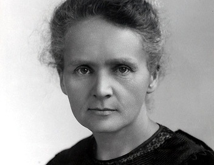

"Nothing in life is to be feared, it is only to be understood."
Marie Curie was a trailblazing physicist and chemist who conducted pioneering research on radioactivity. She was the first woman to win a Nobel Prize, and the only person to win Nobel Prizes in two different scientific fields — Physics and Chemistry.
Curie discovered two elements, polonium and radium, and developed mobile radiography units to treat wounded soldiers during World War I. Her tireless work, even in the face of great adversity and discrimination, broke barriers for women in science and laid the foundation for modern nuclear physics and cancer treatment.